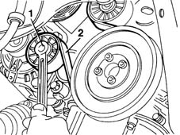

1092G10 single engine belt r r
- Path
- Procedures > 10 ENGINE UNIT > 1092 VARIOUS ENGINE COMPONENT CONTROLS > 1092G single drive belt for various engine components > 1092G10 single engine belt r r
- Kind
- repair procedure (removal / refitting; the operation number is the code)
- Applies to
- engines: 1.9 JTD 8V; all production periods
- Interactive page
- https://sloeber94.github.io/elrnDB-fMltpl/en/#/2891452
Applies to: engines: 1.9 JTD 8V; all production periods
 Removing
Removing
 Refitting
Refitting4450B10 Front WHEEL (one) - R.R.
7055B42 Additional FRONT WHEEL ARCH (one), left or right - R.R.
1. Using the belt tensioner, slacken the tension of the single drive belt.
2. Remove the belt from the pulleys.

Applies to: engines: 1.9 JTD 8V; all production periods
Refitting
RemovingAdjust the belt tensioner to fit the single drive belt.
The tensioning device is automatic: a preloaded spring adjusts the belt to the correct tension upon installation and automatically takes up any slack in the belt.
4450B10 Front WHEEL (one) - R.R.
7055B42 Additional FRONT WHEEL ARCH (one), left or right - R.R.
Topics linked from this page (2)
Topics that link to this page (29)
- S10 ENGINE WHILSTLING / SERVICES BELT NOISY'
- 1008A46 cam shaft left rigid mount - r r
- 1016C11 single cylinder head-r r gasket for versions with air conditioner
- 1020D16 front crankshaft oil seal cover - r+r and replace gaskets for versions with airconditioner
- 1020D20 front crankshaft cover oil seal - replace for versions with air conditioner
- 1028H11 piston connecting rod set - r r
- 1032B14 toothed timing belt - r + r for timing adjustment or replacement versions with air conditioner
- 1032B47 toothed drive pulley - r r for versions with air conditioner
- 1032B53 driven toothed pulley (one) - r r for versions with air conditioner
- 1032C19 mobile timing belt tensioner - r r for versions with air conditioner
- 1032C31 fixed timing tensioner - r r
- 1032D12 timing system protective cover(s) - r + r
- 1036B10 overhead camshaft - r r on vehicle
- 1060E10 pressure pump - r r
- 1060E30 pressure pump pulley - r r
- 1060E40 supplementary pressure pump - r r
- 1060G22 cam angle sensor - r r
- 1072B10 inlet manifold - r + r and replace seal
- 1088C12 water pump - r+r for versions with air conditioner
- 1092A12 crankshaft pulley - r+r for versions with air conditioner
- 1092G14 engine component single belt mobile tensioner - r + r
- 1092G20 engine component single belt fixed tensioner - one - r + r
- 2710A35 intermediate drive shaft mount - r r
- 4130B24 power steering pump r r for versions with air conditioner
- 4130B32 power steering pump mount - r r
- 4130B34 supply pipe from fluid resevior to power steering pump r r
- 4130B35 supply pipe from fluid resevior to power steering pump r r for right hand drive versions
- 5040A20 air conditioner compressor - r+r - includes fluid level check and top up if necessary
- 5530A14 alternator - r+r for versions with air conditioner